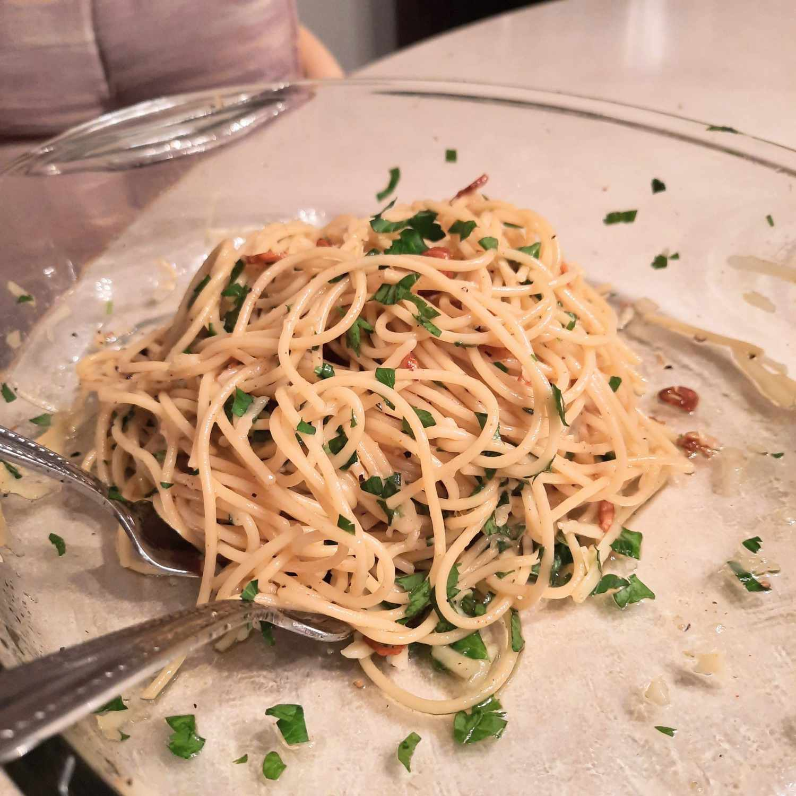

Spaghetti Alio e Olio

Recipe Description
No two aglio e olio recipes are alike, but this one is pretty true to the
classic method.
Ingredients
-
Spaghetti: This recipe, which makes about four servings, starts with one
pound of uncooked spaghetti.
- Oil: You’ll need ½ cup of olive oil.
- Garlic: Six cloves of thinly sliced garlic lends bold flavor.
-
Seasonings: This traditional spaghetti aglio e olio is flavored with crushed
red pepper flakes, black pepper, and fresh parsley.
-
Cheese: For the most delicious results, grate your own Parmigiano-Reggiano
cheese instead of opting for the pre-shredded stuff.
Steps
- Boil the spaghetti.
- Toast the garlic in olive oil.
- Stir the seasonings into the pasta, then stir in the garlic and oil.
- Toss with cheese.